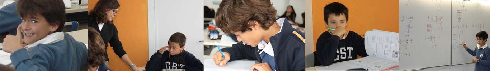
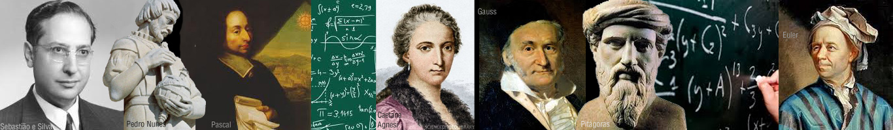

- 

- 


Abertura
Da Beleza Buscada
Lurdes Figueiral
De Euclides a Newton, vincando órbitas planetárias numa folha de papel
António Bivar
A Teoria da Relatividade e o Teorema de Pitágoras
Joana Teixeira
Circo Matemático
A minha bicicleta calcula áreas!
Rogério Martins
A Matemática do Painel Começar de Almada Negreiros
Pedro Freitas
Um sentido para a matemática
Luís Pedro Duarte
A medição do tempo
Máximo Ferreira
Lurdes Figueiral |
Da Beleza buscada
Na nossa cultura, a busca da beleza esteve desde muito cedo estreitamente relacionada com regularidades numéricas e proporções.
|
 António Bivar |
De Euclides a Newton, vincando órbitas planetárias numa folha de papel O grande matemático do século XX Vladimir Arnold (1937-2010) abriu uma conferência que proferiu no Palais de la Découverte em Paris a 7/3/1997 intitulada «On teaching mathematics» com as seguintes afirmações tão profundas quanto polémicas: «Mathematics is a part of physics. Physics is an experimental science, a part of natural science. Mathematics is the part of physics where experiments are cheap». Pretende-se de alguma maneira ilustrar este ponto de vista e revelar outros aspectos fundamentais da natureza da Matemática, colhendo a inspiração numa famosa aula do físico Richard Feynman; mostra-se como conhecimentos elementares de Geometria Euclidiana, ao nível do Ensino Básico, permitem desvendar partes essenciais do pensamento de Newton quando demonstrou que dos princípios básicos da Mecânica clássica que postulou se podem deduzir as leis de Kepler das órbitas planetárias. Ver-se-á como vincos numa folha de papel, feitos de acordo com regras simples, permitem materializar algumas destas ideias. |
Joana Teixeira |
A Teoria da Relatividade e o Teorema de Pitágoras
Einstein - provavelmente o nome do físico mais falado por toda a gente. Relatividade - provavelmente o nome da teoria em física de que mais gente ouviu falar.
|
 Rogério Martins |
A minha bicicleta calcula áreas!
Nesta palestra falaremos de bicicletas, máquinas a pedais e, claro, de matemática.
|
 Pedro Freitas |
A Matemática do Painel "Começar" de Almada Negreiros
O monumental painel "Começar", que pode ser visto no átrio da Fundação Gulbenkian, é uma das obras de arte portuguesas mais emblemáticas do século XX, sendo o seu conteúdo completamente geométrico. Nesta palestra desvendamos um pouco a matemática que está presente no painel, enquadrando-a no pensamento de Almada.
|
 Luís Pedro Duarte |
Um sentido para a matemática Venho falar sobre o que eu penso sobre a matemática e da presença que tem tido na minha vida. Falarei da minha experiência como olímpico e também de como fui ganhando esta atracção pela matemática... este gosto... e de como tem sido e continuará a ser importante para mim. Ao mesmo tempo, tentarei falar daquilo que eu mais gosto nesta área, do que significa para mim, da sua beleza e dos vários sentidos que lhe tenho vindo a dar ao longo dos tempos. |
 Máximo Ferreira |
A medição do tempo
As primeiras noções de “tempo” terão surgido nos povos pré-históricos como resultado da observação do percurso do Sol que, em cada “dia”, aparecia numa determinada direção do horizonte e se elevava até certo limite, ocultando-se no lado oposto, depois de ter proporcionado um período adequado à obtenção de alimentos baseados na caça e na recolha de plantas e frutos.
|